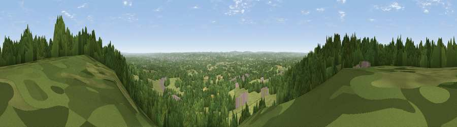

Viewpoint near Sevenoaks Weald
#8903 in England · top 2% of its area beats it · near Sevenoaks WealdWhere it is
The exact computed spot (TQ 53100 52325). Click the marker for map links.
The view, rendered

A 360° render of this exact spot computed from the terrain model, tree cover and land cover — summer colours, afternoon light, calibrated against photographs of famous viewpoints. Real trees, hedges and buildings will differ in detail.
The panorama
Grey silhouette: terrain skyline in each direction (720 bearings, Earth curvature and refraction included). Dashed green: skyline with trees (+15 m) and buildings (+8 m) as obstacles. Blue strip: how far the ground is visible on each bearing.
Where the view opens
Wedge length = distance to the farthest visible ground on that bearing (vegetation-aware). Rings at 10, 25 and 50 km.
What fills the view
49% woodland · 40% grassland · 6% cropland · 5% built-up
Angular shares of the visible panorama (visual magnitude), not map area. Landscape diversity 0.45 (0–1 Shannon).
Key numbers
More beautiful places nearby
The staircase of upgrades: each row has a higher view potential than everything closer. Driving times are estimates from straight-line distance, calibrated against real road routing — check an actual route before setting out.
| Place | Direction | Drive | Score |
|---|---|---|---|
| Viewpoint near Ide Hill | W · 3 km | ~7 min | 65.1 |
| Viewpoint near Shipbourne | ENE · 4 km | ~8 min | 65.3 |
| Viewpoint near Shipbourne | E · 4 km | ~9 min | 69.1 |
| Box Hill | W · 33 km | ~50 min | 70.4 |
| Viewpoint near Box Hill Village | W · 33 km | ~51 min | 71.0 |
| Viewpoint near Coldharbour | WSW · 39 km | ~59 min | 71.3 |
| Malling Hill | SSW · 42 km | ~62 min | 73.8 |
| Cliffe Hill | SSW · 43 km | ~63 min | 79.3 |
51.24955, 0.19231 · source: screening · position refined by local search. Computed location — check access rights before visiting.